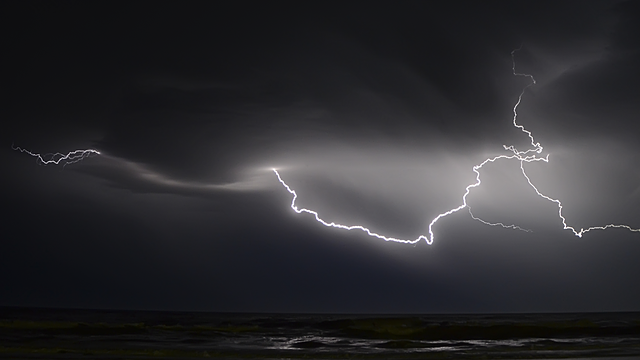

宮沢賢治
岩手県花巻市 出生
詩人・童話作家
雨ニモマケズ 風ニモマケズ
雨ニモマケズ
風ニモマケズ
雪ニモ夏ノ暑サニモマケヌ
丈夫ナカラダヲモチ
慾ハナク
決シテ瞋ラズ
イツモシヅカニワラッテヰル
一日ニ玄米四合ト
味噌ト少シノ野菜ヲタベ
アラユルコトヲ
ジブンヲカンジョウニ入レズニ
ヨクミキキシワカリ
ソシテワスレズ
野原ノ松ノ林ノ ノ
ノ
小サナ萓ブキノ小屋ニヰテ
東ニ病気ノコドモアレバ
行ッテ看病シテヤリ
西ニツカレタ母アレバ
行ッテソノ稲ノ朿ヲ負ヒ
南ニ死ニサウナ人アレバ
行ッテコハガラナクテモイヽトイヒ
北ニケンクヮヤソショウガアレバ
ツマラナイカラヤメロトイヒ
ヒドリノトキハナミダヲナガシ
サムサノナツハオロオロアルキ
ミンナニデクノボートヨバレ
ホメラレモセズ
クニモサレズ
サウイフモノニ
ワタシハナリタイ
南無無辺行菩薩
南無上行菩薩
南無多宝如来
南無妙法蓮華経
南無釈迦牟尼仏
南無浄行菩薩
南無安立行菩薩
春と修羅
わたくしといふ現象は 仮定された有機交流電燈の ひとつの青い照明です

注文の多い料理店
二人の若い紳士が、すつかりイギリスの兵隊のかたちをして、ぴか／＼する鉄砲をかついで、
白熊のやうな犬を二疋つれて、だいぶ山奥の、木の葉のかさ／＼したとこを、こんなことを
云ひながら、あるいてをりました。

やまなし
小さな谷川の底を写した二枚の青い幻燈げんとうです。